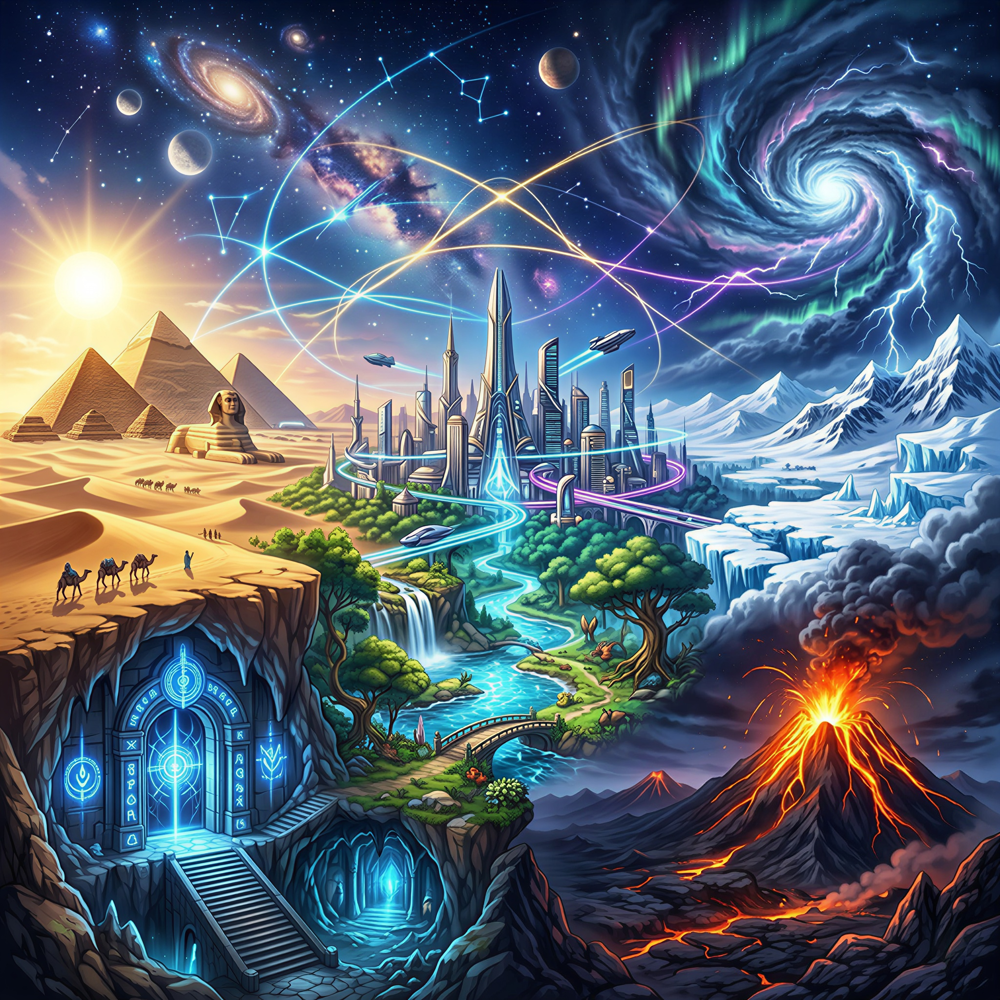

O mundo de HyperPulse Unbound é feito de contrastes fortes, onde tecnologia avançada existe lado a lado com mistérios arcanos muito antigos. Situada em uma Terra aproximadamente 10% maior que a do nosso universo, a história se desenrola em um planeta repleto de regiões inexploradas, ecossistemas extremos e paisagens impressionantes. Parte da história acontece no Canadá, em lugares como Skyreach City, onde os Pulsebreakers tentam levar uma vida comum, e no Pulse Bastion, a base e o lar da equipe escondida no coração das florestas da Venerable Verdure, uma cordilheira de montanhas colossais ao norte da cidade. Mas a trama vai muito além disso: a jornada leva os protagonistas pelos quatro cantos do mundo, passando por desertos brutais, selvas fechadas, cidades futuristas, ruínas antigas, vulcões ativos, cavernas perigosas, terras congeladas, planetas alienígenas e até dimensões paralelas onde as regras da realidade simplesmente não fazem sentido.